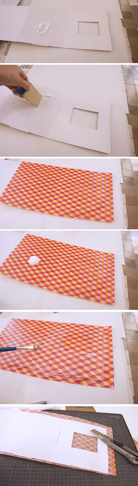

- Extiende una capa de cola blanca sobre la superficie (nosotros usamos un trozo de cartón).
- Coloca encima una servilleta o papel de seda, presiónala un poco y deja que se seque.
- Por último, aplica otra capa de cola, esta vez mejor con un pincel.
